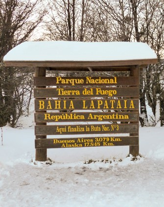

HISTORIA DEL PARQUE
El Parque Nacional Tierra del Fuego, creado en 1960, está en el extremo sur de Argentina y combina montañas y mar. Su nombre viene de las fogatas de los pueblos originarios vistas por navegantes europeos. Alberga bosques andino-patagónicos y fauna como guanacos y nutrias. Cerca de Ushuaia, ofrece senderismo y otras actividades al aire libre. La conservación la gestiona la Administración de Parques Nacionales para proteger su biodiversidad.
UBICACION
El Parque Nacional Tierra del Fuego está ubicado en el extremo sur de Argentina, en la provincia de Tierra del Fuego, Antártida e Islas del Atlántico Sur. Se encuentra cerca de la ciudad de Ushuaia, a unos 12 kilómetros de distancia, y abarca áreas desde la sierra de Injoo Goiyin hasta la costa del canal Beagle. Es el parque nacional más austral de Argentina y se sitúa en la isla Grande de Tierra del Fuego, en la región de la Patagonia Austral.